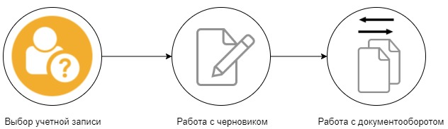

Алгоритм работы с API¶
Порядок работы с методами зависит от цели и задач, которые вы решаете. Выделим основные три направления в работе с API Контур.Экстерна:
Мониторинг документооборотов.
Представление ответа на требования ИФНС.
Отправка отчетности в контролирующие органы¶
Контролирующий орган (далее — КО) — ФНС, ПФР, ФНС или Росстат.
Рассмотрим последовательность действий и методов для отправки отчетности в КО. В частности, покажем наиболее частый сценарий использования API — отправка отчетности в ФНС.
Алгоритм работы с методами API Контур.Экстерна для отправки отчетности в ФНС:
Выбор учетной записи, от имени которой будет происходить работа с API. Учетная запись создается в момент подключения к Контур.Экстерну. Чтобы посмотреть доступные учетные записи воспользуйтесь методом GET All.
-
Создание черновика.
Наполнение черновика файлами документов.
Проверка документов.
Наполнение черновика подписями документов.
Проверка, подготовка, отправка черновика.
Работа с документооборотом:
Отслеживание статуса документооборота.
Отправка ответных документов в налоговый орган.
Первый шаг алгоритма, для работы с учетными записями, не требует дополнительных объяснений. Напротив, процесс работы с черновиками и документооборотом кажется сложным, а обилие методов не помогает разобраться. В следующих статьях мы подробно расскажем, какие методы минимально необходимо использовать для реализации сценария отправки отчетности в КО и приведем примеры работы с ними.